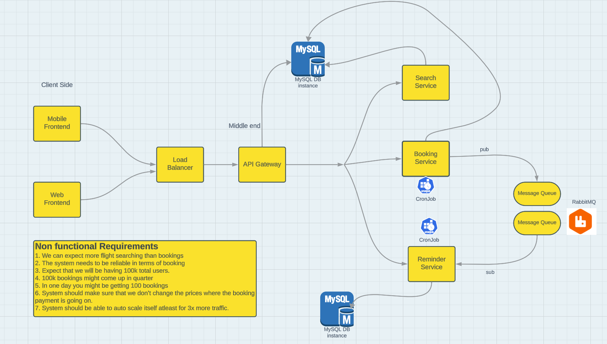
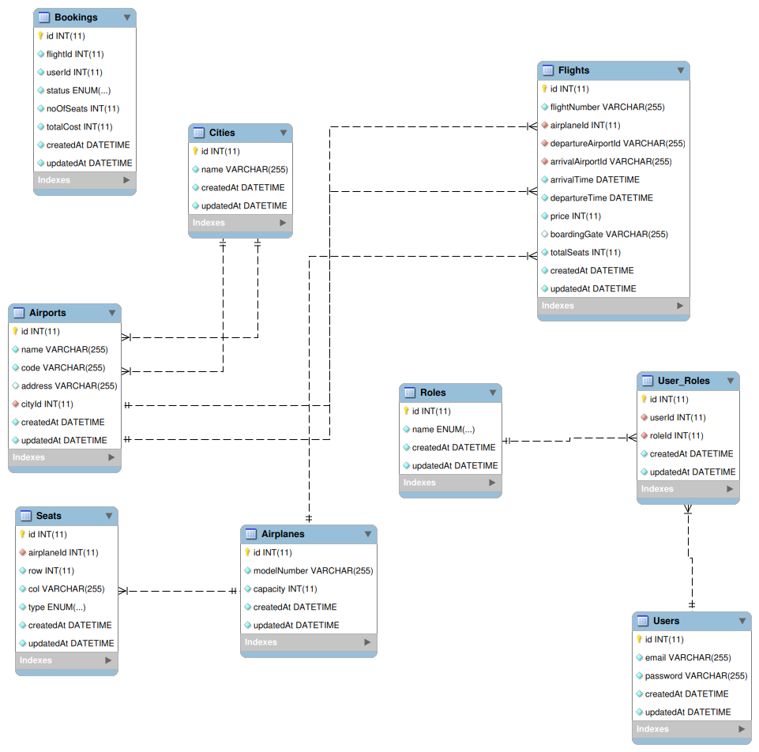
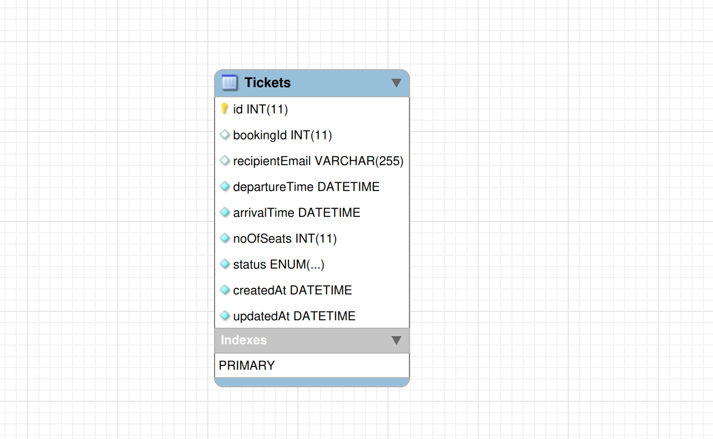
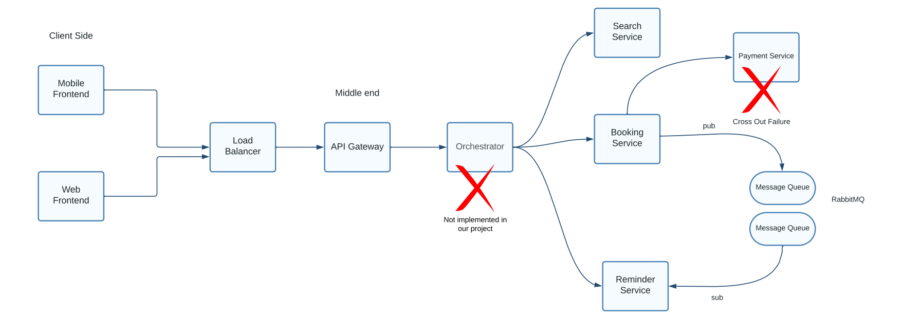

Flyh, Flight Booking
An airline booking backend split into 4 microservices that won't double sell a seat when two people click buy at the same time.
Four services, one gateway
Flyh splits into a Flight service, a Booking service, a Notification service, and an API Gateway in front of all three. The split isn't decoration: each service deploys and scales independently, and a bug in notifications can't take booking down with it.
The high-level design below is the actual diagram this system was built from, load balancer in, gateway routing out to each service, MySQL underneath, RabbitMQ carrying async work.
The system, end to end
Two views of the same system: the high-level design showing how traffic flows from client to services, and the entity-relationship diagram showing what's actually being read and written underneath, bookings, flights, seats, and the join tables connecting airports to cities and users to roles.


The double-booking problem
Here's the actual concurrency bug this system has to prevent: two people click "book" on the same seat within milliseconds of each other. Without protection, both requests read "seat available," both proceed, both succeed, and now the seat is sold twice.
The fix is ACID-compliant transactions with explicit row-level locking through Sequelize. The second request's read gets blocked until the first transaction commits or rolls back, so by the time it actually checks, it sees the updated, now-unavailable state. This was tested directly with high-concurrency booking simulations, not just reasoned about on paper.
Why notifications go through a queue, not a function call
If sending a confirmation email were a direct function call inside the booking request, a slow email provider would make every booking slow, or make it fail outright. Instead, RabbitMQ queues the notification job and the booking request returns immediately. A separate worker processes confirmations, cancellations, and reminders off the critical path, on its own schedule.

The notification service's own schema, decoupled from the booking flow it serves.
What the gateway is actually for
JWT-based stateless authentication, centralized request routing, and rate limiting all live in the gateway instead of being repeated inside every service. That's not just less code, it's one place to fix a security issue instead of three, and one place to see all inbound traffic instead of none.
What deliberately did not get built
The original design sketch included a Payment service and a central Orchestrator coordinating the booking flow. Both are marked directly on the design doc as not implemented, a scoping call made early rather than a corner cut late. Shipping four working services with a clear boundary beat shipping six half-working ones.

The original design doc, with the two components that were consciously scoped out marked directly on it.